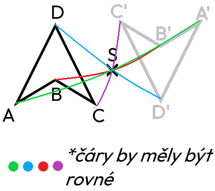

Středová souměrnost
Středová souměrnost je zobrazení, při kterém má každý bod a jeho obraz společný střed a jsou vůči němu stejně vzdálené, ale v opačném směru. Střed souměrnosti leží přesně uprostřed mezi původním bodem a jeho obrazem. Tento typ souměrnosti se využívá v geometrii i při technickém kreslení. Je charakteristická pro pravidelné obrazce.
Informace
- každý bod obrazce zobrazen přes bod S na druhou stranu, tak aby vzdálenost od osy zůstala stejná
- výsledkem je převrácený obraz původního tvaru
- střed souměrnosti se zobrazí sám na sebe
- např. A → A' (bod A je vzor, bod A' je obraz bodu A)
přenesení všech bodů středovou souměrností
znázornění, jak se má rýsovat (není přesné)